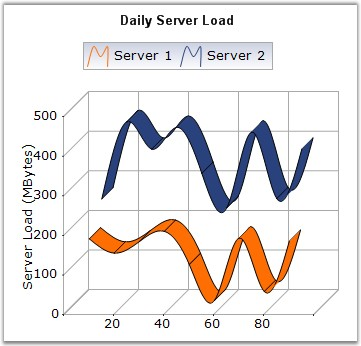

Spline Chart is similar to a Line Chart except that it connects the different data points using splines instead of straight lines.
When rendered in 3D, the plot looks like a ribbon and hence such types are also referred to as Ribbon or Strip Charts.
The appearance of the lines and the points can be configured with options such as the colors used, thickness of the lines and the symbols displayed.

Figure 41: Chart displaying a Spline Series
Chart Details
|
Details | |
|
Number of Y values per point |
1. |
|
Number of Series |
One or More. |
|
Cannot be Combined with |
Pie, Bar,Stacked Bar, Polar, Radar. |
Spline series can be added to the chart using the following code.
|
[C#]
// Create chart series and add data points into it. ChartSeries series = this.ChartWebControl1.Model.NewSeries ("Series Name",ChartSeriesType.Spline); series.Points.Add(0, 2); series.Points.Add(1, 3); series.Points.Add(2, 1); series.Points.Add(3, 1.5); series.Points.Add(4, 4); series.Points.Add(5, 1);
// Add the series to the chart series collection. this.ChartWebControl1.Series.Add (series); |
|
[VB.NET]
' Create chart series and add data points into it. Dim series As ChartSeries = Me.ChartWebControl1.Model.NewSeries ("Series Name", ChartSeriesType.Spline) series.Points.Add(0, 2) series.Points.Add(1, 3) series.Points.Add(2, 1) series.Points.Add(3, 1.5) series.Points.Add(4, 4) series.Points.Add(5, 1)
' Add the series to the chart series collection. Me.ChartWebControl1.Series.Add (series) |